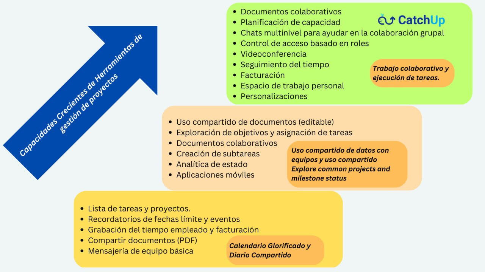

Podemos darte numerosas razones, ¡pero puedes elegir la tuya para cambiarte a CatchUp!
¡Porque entendemos los desafíos de colaborar y trabajar en modelos híbridos y remotos!
¡Para que pueda concentrarse en lo que importa, y CatchUp se encargue del resto!
¡Porque está cansado de integrarse con una docena de otras herramientas que nuestra competencia quiere que haga!
¡Porque le resulta difícil aprovechar todo el potencial de sus equipos remotos mientras esas mentes creativas luchan por colaborar y trabajar juntas!
¡Porque desea dejar de pagar costosos extras!
¡Porque gestionar un proyecto no debería ser un proyecto en sí mismo!
¡Porque está buscando una plataforma de gestión y colaboración de proyectos potente pero económica y fácil de usar!
¡Porque no solo estás buscando un producto, sino un producto con una causa!
Presentamos... un entorno potente pero asequible de última generación para resolver sus problemas organizativos -
Todo en un solo lugar, a un excelente precio, ¡accesible desde todos sus dispositivos!
CatchUp le permite organizar tareas, asignarlas a sus equipos y administrar su trabajo en minutos. Tiene todas las funciones que necesita y muchas más bajo el capó que puede descubrir a medida que se sienta más cómodo con él. ¡No te apresures, no te preocupes!
Entonces... conseguir, listo, ir!

Configurando
¡Es una brisa! Cree un conjunto de proyectos o replique a partir de plantillas para aspectos diferentes pero relacionados de su trabajo. Agregue miembros del equipo a este proyecto, cree las tareas clave y los elementos de acción, ¡y ya está listo para comenzar!
Gestión de tareas y proyectos
Colabore con su equipo para completar las tareas y los elementos de acción a tiempo y también documente los resultados en el camino mediante chats en tiempo real y uso compartido de archivos. Las utilidades eficientes integradas (como Kanban, Calendario, Listas de tareas pendientes, Notas, etc.) lo ayudan a acelerar su trabajo y mantenerse productivo. También puede compartir archivos y trabajar en colaboración en documentos.
Optimizar
Puede agregar, modificar o eliminar proyectos, tareas, elementos de acción y otros productos de trabajo compartidos fácilmente y optimizar su flujo de trabajo según sea necesario. ¡Dispone de vistas enriquecidas, respaldadas por funciones de búsqueda enriquecidas, para obtener el estado de un vistazo e identificar áreas de mayor desarrollo!
¡En cualquier dispositivo!
Sí, sabemos cómo funcionan los equipos. ¡Puede usar CatchUp en su escritorio para las tareas más pesadas y hacer muchas cosas en sus teléfonos inteligentes o tabletas mientras viaja!
Es muy seguro y se puede personalizar según sus necesidades, incluidas las implementaciones locales para clientes más grandes. ¡Sus datos están seguros y respaldados!
¡Deja de pagar extras caros que se suman!
Si está pagando por herramientas y software de videoconferencia adicionales que cuestan un brazo y una pierna por uso, ¿le dijimos que las videoconferencias y las reuniones están incluidas en este precio único? Obtenga más información probándonos.
¡No necesita "integraciones" con docenas de otras herramientas como nuestra competencia quiere que haga!
Todas nuestras funciones están integradas en un solo entorno: reuniones, videoconferencias, intercambio de documentos, gestión de tareas y proyectos, chats en tiempo real. ¡No necesita unir Slack, Teams, OneDrive, Dropbox y Zoom solo para que algo funcione! ¡La vida ya es compleja, el trabajo no tiene por qué serlo!
Barato para probar y usar
No, no usamos cebo y cambio. Puedes probarlo gratis y suscribirte para tu empresa a un precio fijo cada mes. Sin sorpresas en base a la tarifa por usuario por mes. Solo una tarifa plana, para almacenamiento y uso ilimitados para usted y sus empleados. ¡No podemos esperar a que nos pruebe y prospere! Háganos saber cómo podemos hacerlo mejor para usted. Todavía no somos perfectos, ¡pero tú puedes serlo! ¿Entonces, Qué esperas? Regístrese y aproveche el poder de CatchUp para cumplir sus objetivos.
Inscribirse y aproveche el poder de CatchUp para alcanzar sus objetivos.
¿Por qué ballena?
Porque hay un núcleo muy poderoso que se ejecuta debajo de esta plataforma majestuosa pero lúdica que desliza sus proyectos hasta su finalización con gracia.
Y si, ¡Es un producto con una causa!
¡Por todo el buen trabajo realizado, una parte de nuestros ingresos se dona para salvar a las ballenas!